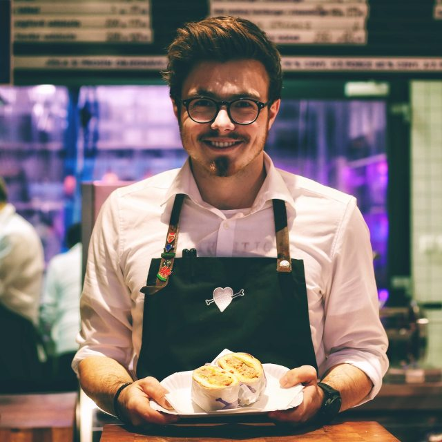
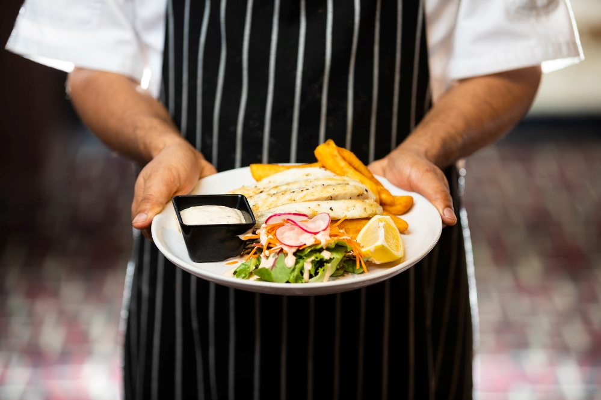
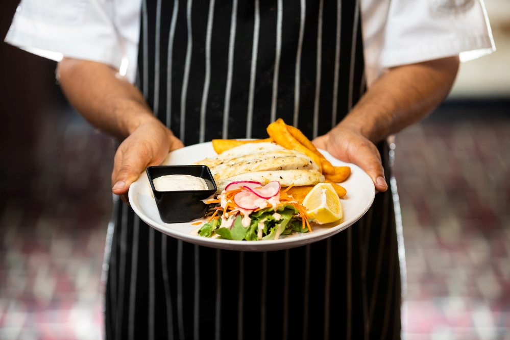

Spoon & Fork is a Professional Restaurant Platform. Here we will provide you only interesting content, which you will like very much. We're dedicated to providing you the best of Restaurant, with a focus on dependability and quality. We're working to turn our passion for Restaurant into a booming online website. We hope you enjoy our Restaurant as much as we enjoy offering them to you.I will keep posting more important posts on my Website for all of you. Please give your support and love.
Thanks For Visiting Our Site. Have a nice day!
Our Team
Our restaurant employs the best chefs from all over Europe. They take care of the delicious taste of our dishes and desserts. Harmony, order and the highest quality are the distinguishing features of our kitchen. The best waiters in the country care for the well-being of the guests, with impeccable appearance and the principles of savoir vivre. All this to create a place friendly to family meetings and experiencing culinary excitement.
Harry Smith Owner Executive ChefGeorge Jones Head Chef Chef de CuisineOlivia Wilson Station Chef Chef de Partie

Adam Brown Room Manager Head WaiterMarc Anthony Bar Waiter Sommelier

 
